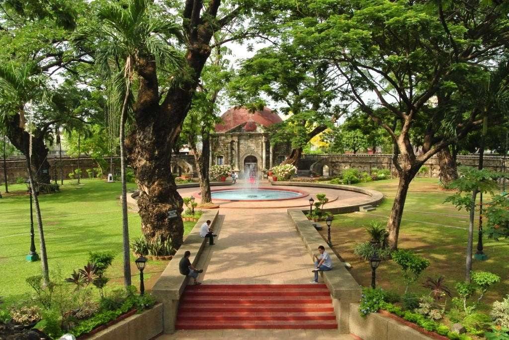
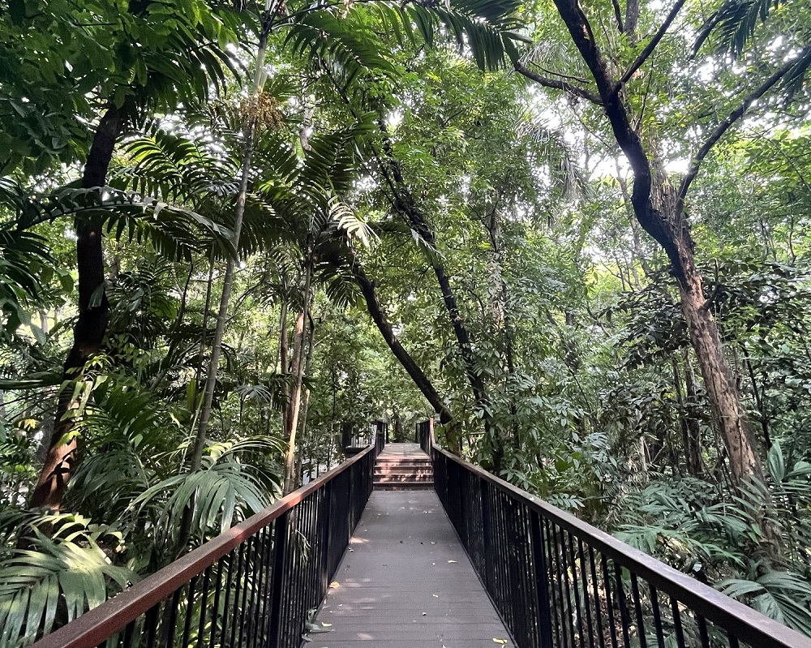
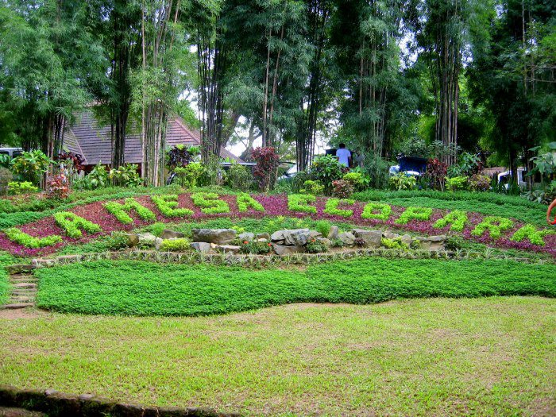

A Must Visited Parks of Manila

Luneta Park
Spanning 58 hectares, the park features lush gardens, historical monuments, and a central lagoon. Whether you're a history buff or just looking for a peaceful retreat, Rizal Park offers a perfect blend of beauty and significance.

Pako Park
The circular park is surrounded by thick walls and features a beautifully landscaped garden with a charming chapel at its center. It is the perfect spot for intimate gatherings, romantic strolls, and cultural performances, making it a hidden gem in the city.

Arroceros Park
This 2.2-hectare urban forest is home to a diverse array of native trees, birds, and plant species. If you’re seeking a tranquil space away from the city’s chaos, this lush green sanctuary is a must-visit.

La Mesa Park
Nestled in Quezon City, this park offers activities such as boating, hiking, and zip-lining. It is an excellent destination for nature enthusiasts and adventure seekers looking for an outdoor escape from the city.